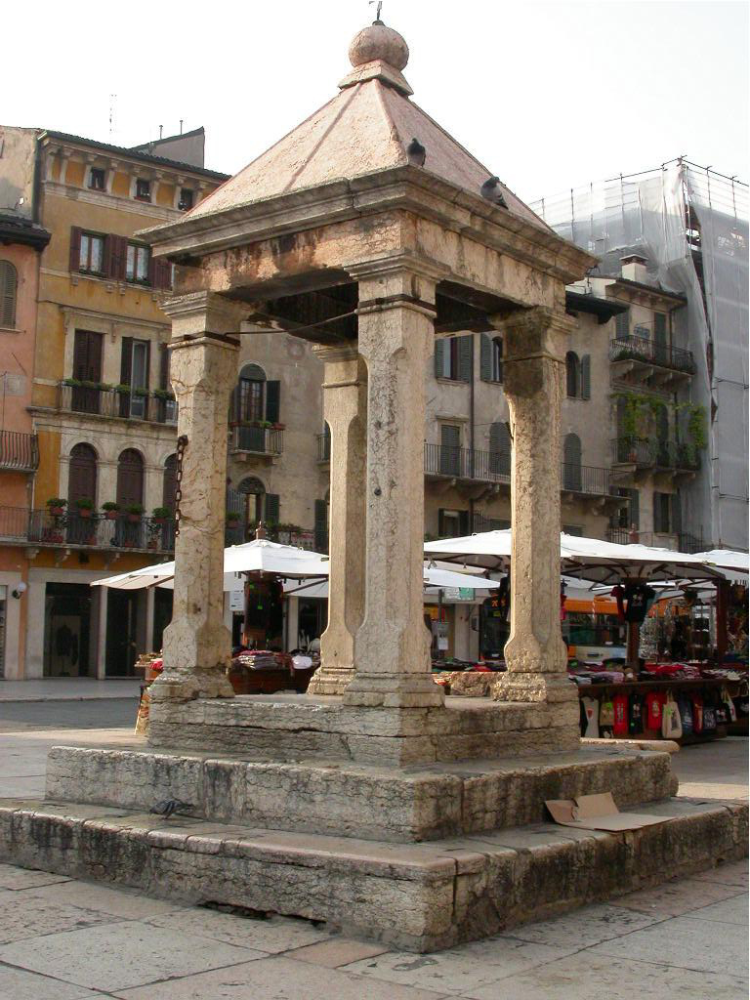
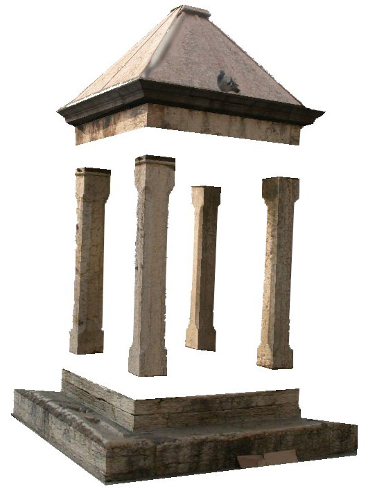
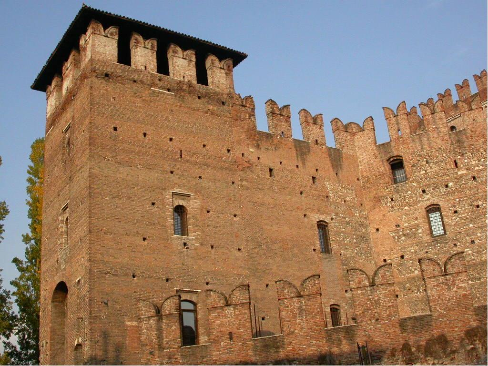
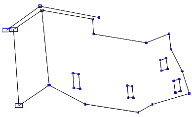
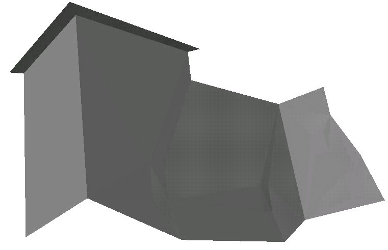
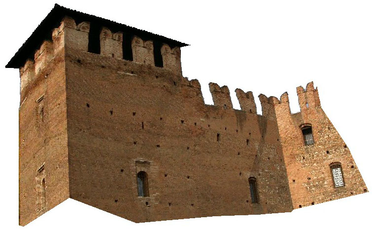

| Sequence | Points and Constraints |
Interval-based reconstruction |
After propagation | Textured | ||||||||
|---|---|---|---|---|---|---|---|---|---|---|---|---|
|  |
|
Average side length of the 3D boxes: 10 cm |
Average side length of the 3D boxes after propagation: 5 mm |
 | ||||||||
|  |
|

Average side length of the 3D boxes: 70 cm |

Average side length of the 3D boxes after propagation: 10 cm |
 |